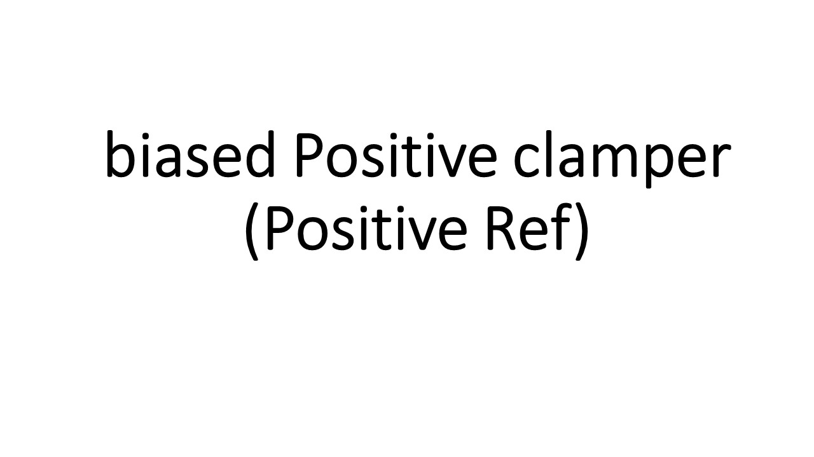

Thiagarajar College of Engineering
EEE Virtual Lab
Home
About TCE
Contact
Login
Study of Clamper Circuits
Aim
Theory
Pre-Quiz
Circuit Design
Simulation
Post-Quiz
Applications
Feedback
Choose the type of clamper:
Biased Clamper
or
Unbiased Clamper
Positive Clamper
or
Negative Clamper
Positive reference
or
Negative reference
Choose Components and Ratings:
Input Voltage (rms):
Diode:
1n4002
1n4004
6A8
6A10
Resistor:
500
1000
Capacitor:
470 uF
220 uF
Reset
Verify
After choosing components and their ratings, click "Verify Button" to verify your circuit design.

Reset
Prev.
Next
1
Output Waveform
Peak Voltage (Vp) =
5V
Bias voltage (Vdc) =
10V
Frequency =
50Hz
Click "Next" button is begin!